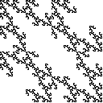
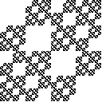

|  |  |
Purpose To understand how images can be generated with simple IFS rules by imposing memory: prescribing which transformations can follow one another. To discover if particular geometrical patterns can be attributed to patterns of allowed combinations of transformations.
Materials IFS with Memory software; standard (memoryless) IFS software.
Background Graphical and software representation of of 1-step memory; 1-step memory examples (generating a single line, romes, generation without memory); software representation of 2-step memory; 2-step memory examples
Procedure Use the idea of addresses to make a first attempt at understanding an image and any memory restrictions needed. Test these attempts with the appropriate software. If necessary, revise the attempt and retest with the software.
Sample 1-step memory: endpoints belonging to a 2-cycle, combinations of lines, identifying romes; 2-step memory: multiple gaskets, memory reduction
Conclusion By including memory - specifying which combinations of IFS transformations are allowed - a much wider variety of images can be produced than with standard (memoryless) IFS. Nevertheless, some images generated by IFS with memory can be generated without memory, with the addition of more transformations. The general question of number of transformations and degree of memory offers many avenues to explore.
Exercises 1-step memory: horizontal, vertical, and diagonal lines, lines with endpoints belonging to a fixed point and its image, combinations of lines, identifying romes; 2-step memory: reducing memory, four copies of a fractal, identifying when memory reduction is possible